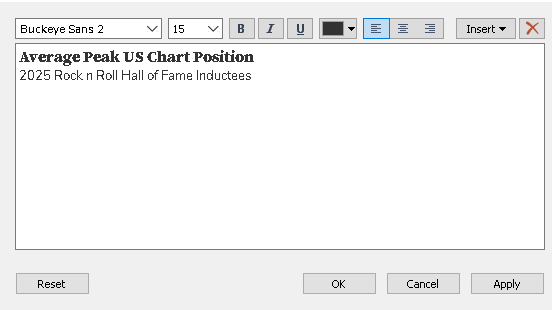
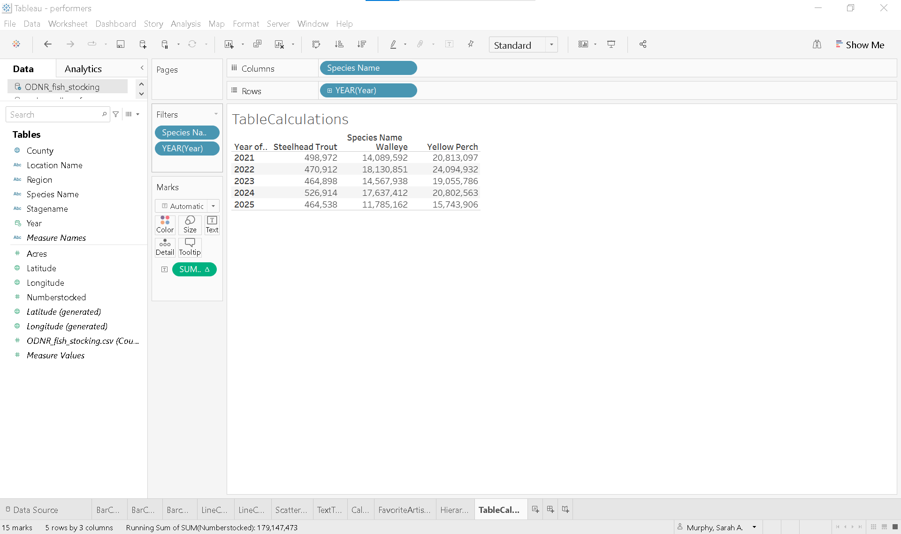
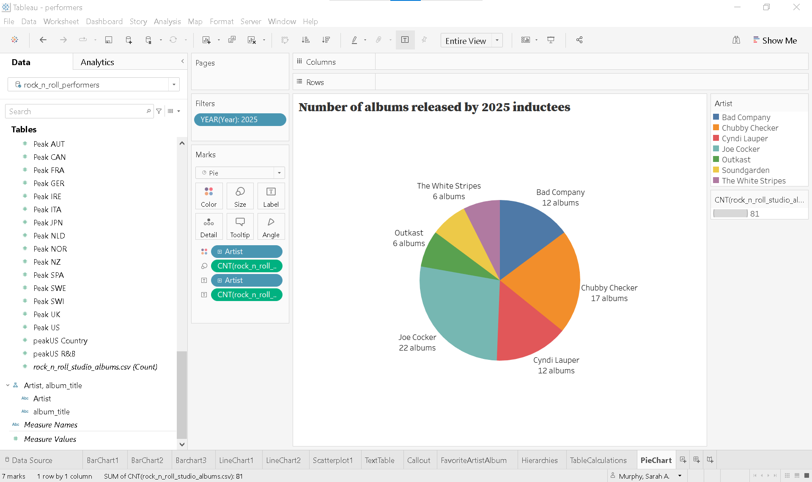

Lesson 3. Read, Interpret, and Evaluate Data
Lesson 2 introduced basic charts for comparing categorical values, visualizing trends over time, and exploring relationships within data. It also explored the distinction between discrete and continuous dates in Tableau and introduced text tables and callout numbers to emphasize key insights. This lesson introduces additional basic charts and techniques.
Data skills | concepts
- Tableau
- Working with data
- Analyzing data
Learning objectives
- Create groups to normalize data, correct errors, and simplify categories.
- Apply hierarchies for better data organization.
- Use formatting strategically to enhance visual impact.
- Analyze data with table calculations.
- Visualize part-to-whole relationships effectively.
This tutorial is designed to support a multi-session Tableau for Research workshop hosted by The Ohio State University Libraries Research Commons. It is intended to help the ABSOLUTE beginner, or anyone who is relatively new to Tableau to build the skills and confidence to apply Tableau to research projects.
LESSON 3
Why Practice Matters
Data visualization is a craft. Like any creative discipline, mastering this craft requires exposure to a variety of styles, techniques, and best practices. Just as musicians or artists grow by studying different genres, data visualiers improve by analyzing a wide range of visual storytelling examples.
To sharpen your skills, make it a habit to explore and critically evalute real-world visualizations—both successful and flawed.
Inspiration and examples
Explore data journalism
Major news outlets often feature compelling data visualizations created by professional data journalists. Check out examples from: - CNN - The New York Times - The Washington Post
The DRAMA framework
The DRAMA Framework, first introducted in Lesson 1, is also useful for critically evaluating data visualizations. (Primeau, n.d.) It encourages you to consider five key dimensions about the source and integrity of the visual:
DRAMA Framework
Date
Relevance
Accuracy
Motivation
Authority
By applying the DRAMA framework, you can better interpret—or design—visualizations that are not only visually compelling but also credible, transparent, and contextually sound.
Groups and Hierarchies
Why group data in Tableau?
Grouping data is a powerful way to clean and organize your dataset. It allows you to:
- Normalize values – Combine similar entries to ensure consistency (e.g., merging “OH” and “Ohio”).
- Correct errors – Fix inconsistencies or typos in category names.
- Simplify categories – Consolidate detailed values into broader, more meaningful groups.
Groups are another great example where there more than one way to accomplish the same task!!!
The simpliest way to create a group in Tableau is to:
- Select one or more data points directly in the view.
- Click the paperclip icon 📎 that appears in the tooltip.
Create a text table showing the peak US chart positions for albums by five of your favorite artists.
- Start a new worksheet and rename it FavoriteArtistAlbum
-
Select the relevant fields
- Drag Artist to the Rows shelf.
- Place Peak US on the Columns shelf.
- Open Show Me and select Text Tables.
-
Select your top 5 favorite artists
- Click on your first favorite artist.
- Hold Ctrl (or Cmd on Mac) + Click to select the others.
- Click the paperclip icon 📎 on the tooltip for the last artist selected
-
Edit group alias
- Right-click the first artist.
- Select Edit Alias.
- Rename to Favorite artists.
- Right-click Favorite artists and choose ✔ Keep only
-
Adjust fields
- Drag Artist to the Rows shelf.
- Drag album_title to the Rows shelf.
- Remove Favorite artists from the Rows shelf
-
Rename group
- Right-click Artist (group) 1 in the Data Pane.
- Select Rename and type Favorite artists.
 and select Text Tables.
and select Text Tables.
Video showing steps 1-9 in exercise 1
A second way to create a group in Tableau is to:
- Right-click a dimension or measure in the Data Pane
- Select Create > Group.
On the FavoriteArtistAlbum sheet, use the Data Pane to group 10 of your Favorite albums into a single group.
- Right-click album_title and select Create > Group
- Rename the group Favorite albums
-
Find and add albums to the group
- Click Find >> to search for the first album title.
- Under Find members, type the name of your first favorite album title and click Find All.
- When the album appears in the list, select it and click Group
- Alias the group Favorite albums
-
Repeat the process for each additional album
- Type the album name under Find members
- Click Find All
- Select the album
- Use the Add to: dropdown to add each additional album to Favorite albums.
- ✔ Include ‘Other’ to consolidate non-favorite titles
Video showing steps 1-4 in exercise 2
Creating custom hierarchies
Custom hierarchies help save space on a view and add interactivity by allowing users to drill down into more detailed levels of data. In Lesson 2, you saw how Tableau automatically creates a date hierarchy—YEAR, QUARTER, MONTH, and DAY—which can be expanded using the + symbol.
You can create your own hierarchies by stacking one dimension onto another in the Data Pane (or one measure onto another).
Let’s walk through an example:
- Duplicate the existing sheet
- Right-click the FavoriteAristsAlbums sheet tab.
- Select Duplicate.
- Rename the new sheet Hierarchies.
- Create a hierarchy
- In the Data Pane drag album_title and drop it onto Artists.
- Filter to show only your favorite albums
- Drag Favorite albums group to the Filters shelf.
- Select Favorite albums only.
- Expand or collapse the hierarchy
- Click the
+or-next to Artist to expand or collapse the hierarchy.
- Click the
Video showing steps 1-4 in example above
Formatting
Effective formatting enhances the clarity and visual appeal of your Tableau dashboards. In Tableau, you can format fonts, shading, alignment, borders, and lines at both the workbook and worksheet levels.
Analysts at The Ohio State University are encouraged to follow the Data Visualization Style Guide to ensure consistency with the university’s brand identity. The guide includes downloadable custom Tableau color palettes—categorical, sequential, and diverging—as well as font usage recommendations and other design best practices.
Applying formatting in Tableau
Format the entire workbook:
- Go to the Format menu and select Workbook. This allows you to apply consistent styles across all sheets.
Format an individual worksheet:
- Use the Format pane by selecting Font, Alignment, Shading, Borders, or Lines from the Format toolbar.
- Alternatively, right-click on a pill and choose Format.
When formatting from a pill, the field name appears at the top of the Format pane. Changes made here apply only to the axis or headers for that specific field. If you close the Format pane and reopen it using the toolbar, the default view applies formatting to the entire sheet. In this case, no field name appears at the top, and you can manually select a dimension or measure from the Fields menu.
Prepare BarChart1 as a clear, engaging figure for an academic paper, follow these steps:
-
Ensure full visibility of Artist names on the X-axis
- Hover over the X-axis line until the until the ↕ (up-down arrow) appears.
- Click and drag the line upward to increase the height of the axis area.
- Hover over the right edge of the Artist name Bad Company until the ↔︎ (left-right arrow) appears.
- Click and drag to the right to expand the column header, ensuring the full name is visible.
-
Adjust bar width
- On the Marks Card click Size.
- Drag the slider to the left to decrease the width of the horizontal bars.
-
Remove redundant field label
- Since the artist names are already shown in the column headers, the field label is unnecessary.
- Right-click Artist in view and select Hide Field Labels for Columns.
-
Remove unnecessary lines
- From the Format toolbar, select Lines.
- In the Formatting Pane, go to the Rows tab and set Grid Lines to None.
- Switch to the Sheet tab and set Axis Rulers and Zero Lines to None.
-
Customize Y-Axis Label and Tick Marks
- Right-click on Y-Axis and select Edit Axis.
- Rename the axis title to Peak US Chart Position (Average).
- Click the Tick Marks tab, set Major Tick Marks to Fixed and define the interval as 15.
- Close the dialog.
-
Experiment with removing Y-axis
- Copy AVG(Peak US) to Label on Marks Card.
- Click Format on the AVG(Peak US) pill to open the Formatting Pane.
- Under the Pane tab, set Numbers to Number (Custom) and reduce decimal places to 0.
- Right-click the Y-axis and uncheck Show Header to hide it.
- To restore: click the ▼ caret on the AVG(Peak US) pill and select Show Header.
-
Adjust font for clarity
- In the Formatting Pane, select Font.
- From the Fields ▼ dropdown, choose AVG(Peak US) and …
- Increase the font size from 9pt to 12pt.
- Match font color to the bar color and apply Bold.
- Then select Artist from the same dropdown and set the default font color to match the bar color.
-
Add a descriptive title
- Double click the worksheet title Barchart1.
- On the first line enter: Average Peak US Chart Position
- On the second line enter: 025 Rock n Roll Hall of Fame Inductees
- Adjust font sizes and styling as needed. 
-
Add a Zero Line
- From the Format toolbar, select Lines.
- On the Rows tab, set a solid, thick, dark gray zero line.
-
Export the visualization for publication
- Go to the Worksheet toolbar and select Export > Image.
- Uncheck all options except Title and View.
- Save the image as Scalable Vector Graphics (*.svg) for high-quality print use.

Table calculations
Table calculations enhance Tableau performance and efficiency by limiting the scope of computation to what’s displayed in the view, rather than the entire dataset.
Common types of table calculations include:
- Running Total
- Difference
- Percent Difference
- Percent of Total
- Rank
- Percentile
- Moving Average
- Year-to-Date (YTD) Total
- Compound Growth Rate
- Year-over-Year (YoY) Growth
- YTD Growth
Let’s walk through an example using the ODNR_fish_stocking.csv dataset, last updated on July 1, 2025. This dataset, maintained by the Ohio Department of Natural Resources Division of Wildlife, spans from 1970 to present and is freely available through DataOhio.
You can access the dataset directly here.
Ohio considers data a shared strategic asset and this resource is designed to help anglers: - Identify fishing locations where specific species have been stocked. - Explore detailed stocking histories for waters they frequently fish or are particularly interested in.
- Start a new worksheet and rename it TableCalculations
- Connect to
ODNR_fish_stocking.csvdataset- In the Data toolbar, click New Data Source
- Locate the text file
ODNR_fish_stocking.csv. - The Data Source page will open, displaying the file on the Canvas.
- Return to the TableCalculations tab.
Note: You should now see two data sources on the Data Pane: ODNR_fish_stocking.csvrock_n_roll_performers.csv.
Ensure thatODNR_fish_stockingis selected as the active data source.
- Create a text table filtered by selected species
- Filter by species:
- Drag Species Name to the Filters shelf.
- In the filter dialog, select
- Steelhead Trout
- Walleye
- Yellow Perch
- Set up the table layout:
- Drag Species Name to the Columns shelf.
- Change Year to Date & Time data type (if not already).
- Right-click and drag Year to the Rows shelf.
- In the dialog select a discrete year.
- Right-click and drag Year to the Filters shelf.
- Filter for the Discrete Years: 2001-2005.
- Add measure:
- Drag Numberstocked and drop onto the
Abctext in the view to populate the talbe with values.
- 450,000 Steelhead Trout
- 11.3 million Walleye
- 4 million Yellow Perch
- Drag Numberstocked and drop onto the
- Filter by species:
Table calculations in Tableau are applied to green (continuous) measure pills. To create a running total, follow these steps:
- On the Marks Card, click the ▼ caret on the Numberstocked pill
- Hover over Quick Table Calculation ► and select Running Total
At this point, Tableau begins calculating the running total across the table by default. For example, in the year 2021, Tableau adds:
- The Steelhead Trout value to the Walleye value,
- Then adds both to the Yellow Perch value.
This behavior occurs because Tableau is currently:
- Partitioning the data by Year (i.e., grouping by each year),
- And addressing the data across the table (i.e., moving left to right across species).
If you want to see a running total within each species (e.g., Steelhead Trout from 2021 to 2025), you need to adjust how Tableau computes the table calculation:
- On the Marks Card, click the drop-down arrow on the Numberstocked pill again.
- Select Compute Using > Table (Down).
This tells Tableau to:
- Partition the data by Species Name,
- And compute the running total down the table (i.e., year over year for each species).

Choose an effective visual
Part-to-Whole Relationships
Pie chart
Pie charts are commonly used to illustrate how individual parts contribute to a whole. However, data visualization experts often discourage their use because humans struggle to accurately compare angles and areas, making interpretation less precise than other chart types.
That said, there are situations where a pie chart may be appropriate—such as when the audience expects it or when it provides a clear and immediate visual impact.
Let’s return to our rock_n_roll_performers dataset to explore the pie chart.
- Start a new worksheet and rename it PieChart
- Set the active data source
- On the Data Pane, select
rock_n_roll_performers. - The fields for the
rock_n_roll_performersandrock_n_roll_studio_albumsshould appear.
- On the Data Pane, select
- Filter by 2025 inductees
- Change Year to Date & Time data type (if not already).
- Filter for the Discrete Year: 2005.
- Create the pie chart
- On the Marks Card change the marks type to Pie.
- Color the pie with a dimension
- On the Marks Card, drag Artist to Color.
- In the Toolbar, change the view from Standard to Entire View.
- Size the slices with a measure
- On the Marks Card, drag rock_n_roll_studio_albums.csv (Count) to Size
- Add a descriptive title
- Double click the worksheet title PieChart.
- Enter:
- Number of Albums Released by 2025 Inductees
- Enhance clarity
- Copy Artist and rock_n_roll_studio_albums.csv (Count) to Label on the Marks Card.
- Click Label on the Marks Card and select the … tile next to Text.
- Enter:
- albums next to <CNT(rock_n_roll_studio_albums.csv)>

Donut chart
The donut chart is a variation of the pie chart, distinguished by its blank center. This design not only offers a cleaner visual but also makes it slightly easier for viewers to compare the relative sizes of each category.
Create a Donut Chart showing the number of albums released by 2025 Rock N Roll Hall of Fame inductees.
-
Duplicate the existing sheet
- Right-click on PieChart and select Duplicate.
- Rename the new sheet DonutChart.
-
Create a calculated field
- Double click on the Rows shelf and type avg(0).
- It doesn’t really matter whether you use average, minimum, or maximum. Tableau requires aggregated measures, and the average of zero is always zero.
-
Duplicate this calculation
- Hold Ctrl (or Option on Mac) and drag AGG(avg(0)) to the right to duplicate the pill on the Rows shelf.
- Notice there are now 2 pie charts and a separate marks card for each chart.
-
Format Marks Cards
-
On the Marks Card labeled AGG(avg(0)) (2):
- Click the dropdown next to Automatic and select Circle.
- Remove Artist, CNT(rock_n_roll_studio_albums.csv) from color, size, and label.
-
Click on Color:
- Change color to White.
- Add a dark gray border.
-
On the Marks Card labeled AGG(avg(0)) (2):
-
Create a dual axis
- On the second AGG(avg(0)) pill, click the ▼ caret and select Dual Axis.
-
Adjust size
-
On the Marks Card labeled AGG(avg(0)):
- Click Size.
- Drag the slider to the right to increase the size of the colored pie chart.
-
On the Marks Card labeled AGG(avg(0)) (2):
- Drag the slider to the right to increase the size of the white circle.
-
On the Marks Card labeled AGG(avg(0)):
-
Adjust formatting
-
Remove unnecessary lines:
- From the Format toolbar, select Lines.
-
On the Rows tab set:
- Set Zero Lines to None.
-
Remove unnecessary lines:
-
Remove borders:
- From the Formatting Pane select Borders.
-
On the Sheet tab, set:
- Row Divider to None on Pane:.
- Column Divider to None on Pane:.
-
Remove headers:
- Right-click the left avg(0) axis and uncheck Show Header.
Video showing steps 1-7 above
Tree Map
Tree maps are a compelling alternative to pie charts, using nested rectangles to represent the proportional size of categories relative to one another.
Quickly convert the Donut Chart created in Exercise 4.
-
Duplicate the existing sheet
- Right-click on DonutChart and select Duplicate.
- Rename the new sheet TreeMap.
- Open Show Me and select Treemaps
-
On the Marks Card
- Copy Artist to Color.
- Copy CNT(rock_n_roll_studio_albums.csv) to Label
-
Add a Percent of Total Table Calculation
- Click the ▼ caret on the CNT(rock_n_roll_studio_albums.csv) pill assigned to Label
- Hover over Quick Table Calculation ► and select Percent of Total.
-
Update title
- Double click the worksheet title.
-
Enter:
- Percentage of total albums released by 2025 inductees
Supplemental readings

- by Jonathan Schwabish
- New York : Columbia University Press, 2021.

- by Stephanie Evergreen
- Thousand Oaks, California: SAGE Publications, 2020